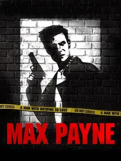

 |
|
| Tiempo de juego | 58s |
| Última actividad | 9/1/2026 8:24:10 |
| Añadido | 10/11/2025 19:34:16 |
| Modificado | 10/12/2025 11:28:11 |
| Estado de finalización | Jugado |
| Librería | Playnite |
| Fuente | |
| Plataforma | PC (Windows) |
| Fecha de lanzamiento | 23/7/2001 |
| Puntuación de la Comunidad | 86 |
| Puntuación de la Crítica | 74 |
| Puntuación de usuario | |
| Género | Shooter |
| Desarrollador | Remedy Entertainment |
| Editor | 3D Realms Feral Interactive Gathering of Developers MacSoft Games Rockstar Games Take-Two Interactive |
| Característica | Single Player |
| Enlaces | |
| Tag | |
Esto es puro cine negro hecho videojuego. Es un cómic oscuro, violento y que te vuela la cabeza.
Sos Max Payne. Un policía encubierto al que le salió todo para el orto. Te tendieron una trampa zarpada: te acusan de matar a tu compañero y ahora toda la policía de Nueva York te quiere muerto. Y la mafia también. Estás solo, cazado, en medio de la peor tormenta de nieve de la historia, y lo único que te queda es buscar respuestas y vaciar cargadores.
Este juego cambió TODO por una sola cosa: BULLET TIME. El "Tiempo Bala". Apretar un botón y que el mundo se ponga en cámara lenta, inspirado tremendamente en el legado de esas clásicas tomas cinematográficas de Matrix. Tirarte de costado (¡el shootdodge!) mientras ves las balas pasar y vaciás dos Ingram sobre tres tipos... en 2001, esto era el futuro. Era la revolución.
Un juego que definió una década. Crudo, rápido e inmersivo. Un clásico inolvidable.